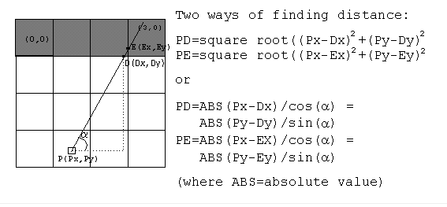

Step 4 : FINDING DISTANCE TO WALLS
There are several ways to find the distance from the player to the wall slice. They are illustrated below.

The sine or cosine functions are cheaper to implement because they can be pre-computed and put into tables. This can be done because ALPHA (player’s POV=Point of View) has to be between 0 to 360 degrees, so the number of possibilities are limited (the square root method has a virtually unlimited possible values for the x’s and y’s).
In our code, we chose the Pythogerean theorem. The distance is the Euclidean distance between two points. We chose this because it was simple to implement and because so far we did not put angles into a look up table.
At the moment, we focus on an easy implementation of the ray casting method. We will see later if optimizations are needed.
//ComputeDistance
EuclideanDistanceBetweenPoints: function(xunitplayer,yunitplayer,xaunitplayer,yaunitplayer)
{
var x=(xunitplayer-xaunitplayer);
xsquare=x*x;
var y=(yunitplayer-yaunitplayer);
ysquare=y*y;
var dist=Math.sqrt(xsquare+ysquare);
return dist;
},
drawoneintersection : function()
{
var xunitplayer=this.width/2-32;
var yunitplayer=this.MAP_HEIGHT*this.wallsize-2.5*this.wallsize;
var debug=1;
var rayangle=this.degreeToRad(30);
this.ComputeTanRayAngle(rayangle);
var dv=this.FindWallVertical(xunitplayer,yunitplayer,rayangle,debug);
var dh=this.FindWallHorizontal(xunitplayer,yunitplayer,rayangle,debug);
var d=Math.min(dv,dh);
var str="";
console.log("dv="+dv);
console.log("dh="+dh);
console.log("d="+d);
str="dv="+dv+"\ndh="+dh+"\nmin d="+d;
return str;
},
Let us draw vertical and horizontal intersections for all the FOV (Field Of View=60 degrees) at a given POV (Point Of View=45 degrees).
drawallintersection : function()
{
var xunitplayer=this.width/2;
var yunitplayer=this.MAP_HEIGHT*this.wallsize-2*this.wallsize;
var debug=1;
var POVdegree=45;
var POVrad=this.degreeToRad(POVdegree);
var startangle=POVrad-this.HalfFOVrad;
var endangle=POVrad+this.HalfFOVrad;
var nbangles = this.width;
var distances=new Array(nbangles);
var i=0
str="";
for (var rayangle=startangle; rayangle <endangle; rayangle=rayangle+this.AngleRadByColumn)
{
this.ComputeTanRayAngle(rayangle);
var dv=this.FindWallVertical(xunitplayer,yunitplayer,rayangle,debug);
var dh=this.FindWallHorizontal(xunitplayer,yunitplayer,rayangle,debug);
var d=Math.min(dv,dh);
distances[i]=d;
console.log("i="+i);
console.log("d="+d);
str+="i="+i+" min d="+d+"\n";
i=i+1;
}
return str;
}
Let us draw only the shortest vertical or horizontal intersection for all the FOV (Field Of View=60 degrees) at a given POV (Point Of View=45 degrees).
drawBestWallintersection : function(xunitplayer,yunitplayer,rayangle,csscolor,debug)
{
var dv=this.FindWallVertical(xunitplayer,yunitplayer,rayangle,debug);
var dh=this.FindWallHorizontal(xunitplayer,yunitplayer,rayangle,debug);
var d=0;
if (dh<dv){
this.drawLine(xunitplayer,yunitplayer,this.xunitHintersection,this.yunitHintersection,'green');
d=dh;
}else{
this.drawLine(xunitplayer,yunitplayer,this.xunitVintersection,this.yunitVintersection,'blue');
d=dv;
}
return d;
},
drawallBestintersections : function()
{
var xunitplayer=this.width/2-32;
var yunitplayer=this.MAP_HEIGHT*this.wallsize-2.5*this.wallsize;
var debug=1;
var POVdegree=45;
var POVrad=this.degreeToRad(POVdegree);
var startangle=POVrad-this.HalfFOVrad;
var endangle=POVrad+this.HalfFOVrad;
var nbangles = this.width;
var distances=new Array(nbangles);
var i=0
str="";
for (var rayangle=startangle; rayangle<endangle; rayangle=rayangle+this.AngleRadByColumn)
{
this.ComputeTanRayAngle(rayangle);
d=this.drawBestWallintersection(xunitplayer,yunitplayer,rayangle,"green",0);
str+="i="+i+" min d="+d+"\n";
i=i+1;
}
return str;
},
Next: Step 5 : DRAW THE WALLS
step5.html
Back: Step 3
step3.html